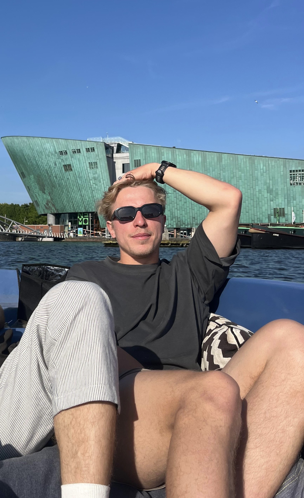

Melle van der Brugge
I'm Melle van der Brugge, currently pursuing a Master’s in Artificial Intelligence at the University of Amsterdam. The program focuses heavily on mathematics, programming, and a broad range of AI techniques — from symbolic reasoning to deep learning. My academic work recently culminated in a thesis on evaluating and improving image quality metrics for photoacoustic imaging, combining both classic signal processing and modern machine learning.
Before this, I completed a Bachelor’s in Beta Gamma at the UvA — an interdisciplinary program that blends natural sciences, social sciences, and humanities. This background taught me how to connect different fields to tackle complex problems — something I continue to do with AI. I’m especially interested in applying AI in versatile, real-world contexts where domain knowledge, technical skills, and creative thinking come together.
Skills & Tools
- Python (NumPy, pandas, matplotlib, scikit-learn)
- Deep Learning (PyTorch, TensorFlow, Keras)
- Computer Vision (OpenCV, image classification, segmentation)
- Reinforcement Learning (policy gradients, Q-learning, Gym)
- Explainable AI & Model Interpretability
- Medical Imaging & Signal Processing
- Data Visualization (Plotly, Seaborn, dashboards)
- Version Control (Git, GitHub)
Outside of Work
I enjoy endurance sports like cycling, swimming, and running, but also team-based and game-like activities such as football, tennis, and padel. I like staying active in general — even just going to the gym and clearing my head.
As a side job, I give boat tours through the canals of Amsterdam. I love being on the water, sharing stories about the city, and continuously learning about its rich history and hidden gems.